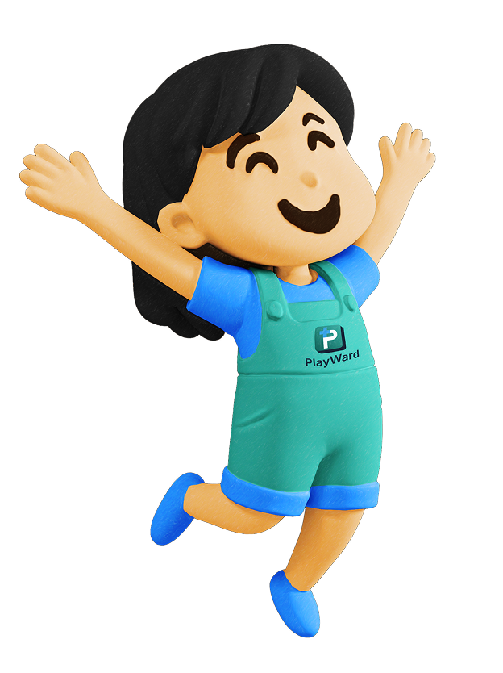

Need Help?
Having trouble or just looking around? We can help! On this page you can find video tutorials of how our portal works as well as a FAQs section that can help you troubleshoot if necessary.
Creating a Custom Prompt Video
Using quick create option Video

FAQs/Troubleshooting
Start with either Quick Create or Customize Prompt. The user-friendly interface will take you through steps that generate a completed prompt.
Yes, you can copy the prompt into any AI generator.
Try inputting the prompt into the AI again. If this does not work, tell the AI what is wrong with the prompt and test if it will fix it. For example, if the prompt is generating correctly everything but is not recognizing your theme choice of "superheroes" you can type in your AI chat, "Regenerate using a superhero theme."
If you cannot get the prompt to copy through the "Copy and Open" button then simply select the prompt text and copy it manually with your device.
You aren't restricted to our suggestions. While we recommend specific models based on our testing for each prompt type, you are free to use any AI platform you prefer.
To start over, return to the home page. If you are mid-process, click the top-left icon to jump back to the activity selection screen.
Please review your prompt to ensure you are following all copyright and intellectual property guidelines. AI is limited with the information and functionality for generating specific items. Try simplifying your prompt or generating a new prompt using PlayWard.
To ensure privacy, PlayWard does not require an account or save on data/prompts.
If the AI platform does not open automatically, copy the prompt manually and paste it into your preferred AI tool.